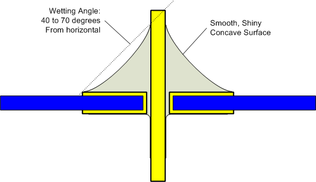
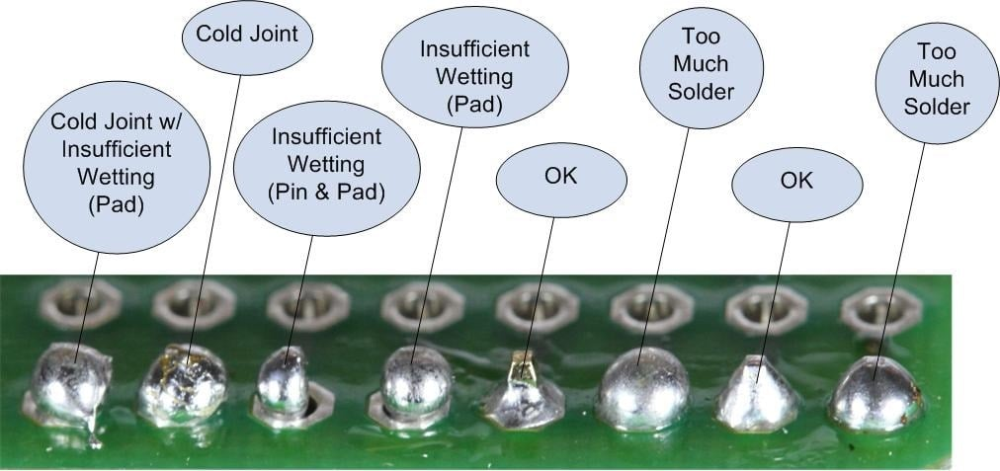

| Date | Student ID | ||
|---|---|---|---|
| Time | Board | PCB Stylophone v3 | |
| Marker | Self-marking | Mark | 100 |
Any wrong value or polarity of a component will result in a loss of 10 marks. Minimum mark for this section is 0. Markers visually check the values and polarities.
| Component | Value | Polarity | Component | Value | Polarity |
|---|---|---|---|---|---|
| C1 | 100n | - | R10 | 2.43k | - |
| C2 | 10n | - | R11 | 2.61k | - |
| J1 | battery | correct | R12 | 2.74k | - |
| LS1 | buzzer | - | R13 | 2.87k | - |
| R1 | 10k | - | R14 | 3.01k | - |
| R2 | 22.1k | - | R15 | 3.24k | - |
| R3 | 1.62k | - | R16 | 3.48k | - |
| R4 | 1.74k | - | R17 | 3.65k | - |
| R5 | 1.82k | - | R18 | 3.83k | - |
| R6 | 1.91k | - | R19 | 4.12k | - |
| R7 | 2.05k | - | R20 | 4.32k | - |
| R8 | 2.15k | - | R21 | 4.64k | - |
| R9 | 2.32k | - | U1 | NE555P | correct |
| Total | |||||
Please see Appendix I for more information.
| Practice | Descriptor |
|---|---|
| Soldering | |
| Finishing |
Please see Appendix III for how to check the correct pitch.
| Test | Descriptor |
|---|---|
| Current consumption | |
| All keys make sounds | |
| Correct pitch |
You can request, up to three times, for replacements of PCBs, but each replacement request will result in deduction of 10 marks from the total awarded marks.
| Number of replacement PCBs |
|---|
A solder joint is recognised "ok" if it is not of one of the following conditions: insufficient wetting (pad and/or pin), solder starved, too much solder, solder bridge.
A solder joint finishing is recognised "ok" if it is not of one of the following conditions: lifted pad (it'll be "ok" if a lifted pad is repaired), disturbed joint, overheated joint, insufficient trimming, over trimming, bent leads, and stray solder splatters over the PCB.
An Ideal Solder Joint
Examples of Solder Joint Conditions
Figures are from Earl, B. (n.d.) Adafruit Guide to excellent soldering. Adafruit Learning System. Please visit the website for more information.
You may download any frequency measurement app on your phone to check the pitch frequency. Due to available resistance values in EIA E96 (1%), the actual frequencies of tones may be deviated from the nominal frequencies. Note that errors accumulate, and differences may be more than the values shown in the following table.
| Key | Note | Colour | Nominal f (Hz) | Actual centre f (Hz) | Difference |
|---|---|---|---|---|---|
| 12 | E7 | W | 2637.02 | 2662.36429 | 0.96% |
| 11½ | D#7 | B | 2489.015 | 2512.18914 | 0.93% |
| 11 | D7 | W | 2349.315 | 2368.68261 | 0.82% |
| 10½ | C#7 | B | 2217.46 | 2235.13235 | 0.80% |
| 10 | C7 | W | 2093.005 | 2110.26827 | 0.82% |
| 9 | B6 | W | 1975.535 | 1990.89603 | 0.78% |
| 8½ | A#6 | B | 1864.655 | 1879.39756 | 0.79% |
| 8 | A6 | W | 1760 | 1772.29359 | 0.70% |
| 7½ | G#6 | B | 1661.22 | 1672.46342 | 0.68% |
| 7 | G6 | W | 1567.98 | 1577.05076 | 0.58% |
| 6½ | F#6 | B | 1479.98 | 1487.93714 | 0.54% |
| 6 | F6 | W | 1396.915 | 1404.79112 | 0.56% |
| 5 | E6 | W | 1318.51 | 1327.0199 | 0.65% |
| 4½ | D#6 | B | 1244.51 | 1252.38799 | 0.63% |
| 4 | D6 | W | 1174.66 | 1181.04554 | 0.54% |
| 3½ | C#6 | B | 1108.73 | 1114.45895 | 0.52% |
| 3 | C6 | W | 1046.5 | 1052.21047 | 0.55% |
| 2 | B5 | W | 987.765 | 992.572185 | 0.49% |
| 1½ | A#5 | B | 932.33 | 936.89225 | 0.49% |
| 1 | A5 | W | 880 | 883.650608 | 0.41% |